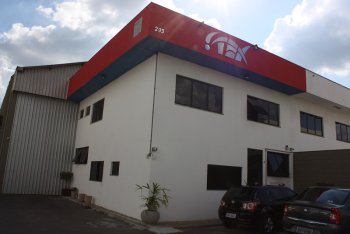

TEX Equipamentos Eletrônicos Indústria e Comércio
A Empresa
A TEX Equipamentos Eletrônicos foi fundada em 1997, na cidade de São Paulo, a partir de um desafio: desenvolver o melhor equipamento brasileiro para testar, a seco, vazamentos em peças manufaturadas.
Com este desafio em mente e o sonho de se tornar uma referência mundial em testes de vazamento, a empresa desenvolveu, naquele ano, os primeiros equipamentos eletrônicos para testes de estanqueidade: a Geração Zero (G0). Esses produtos são capazes de detectar vazamentos em linhas de montagem dos mais diversos produtos, como radiadores, faróis, reservatórios (água/gasolina), cárter, coletores motores, caixas de câmbio, fogões, ferros de passar, purificadores de água, metais sanitários, torneiras, válvulas, frascos, relógios, bolsas coletoras, cateteres etc.
Produtos em Destaque